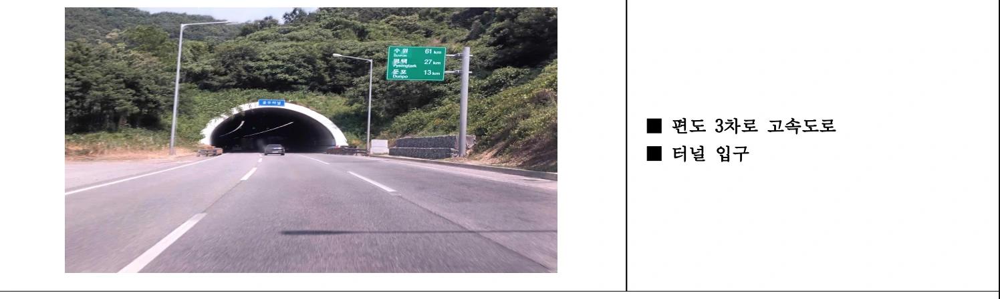

749. 다음과 같은 상황에서 가장 안전한 운전방법 2가지는?

- ①터널 안에서는 주차는 금지되나 일정한 장소에 비상정차는 가능하다.
- ②터널 내부가 어둡더라도 선글라스를 착용한 채로 그대로 진행한다.
- ③터널 내 백색실선 구간이더라도 좌우차로의 소통이 원활하면 차로변경 할 수 있다.
- ④터널 내에서는 최고 제한속도가 적용되지 않아 속도를 높여 빠르게 통과한다.
- ⑤터널 주변에서는 바람이 불 수 있으니 주의하며 속도를 줄인다.
정답 보기
정답
① 터널 안에서는 주차는 금지되나 일정한 장소에 비상정차는 가능하다.
⑤ 터널 주변에서는 바람이 불 수 있으니 주의하며 속도를 줄인다.
근거·해설
터널 내부는 주차는 금지되어 있으나, 일정한 장소에서 정차가 가능하다. 터널 내부가 어두우면 선글라스는 착용하 지 않는 것이 바람직하며, 터널 내에서도 최고제한 속도를 지키며 백색실선 구간에서는 진로변경이 제한된다. 터널 주변에서는 바람이 불 수 있으니 주의하여 진입하여야 한다.